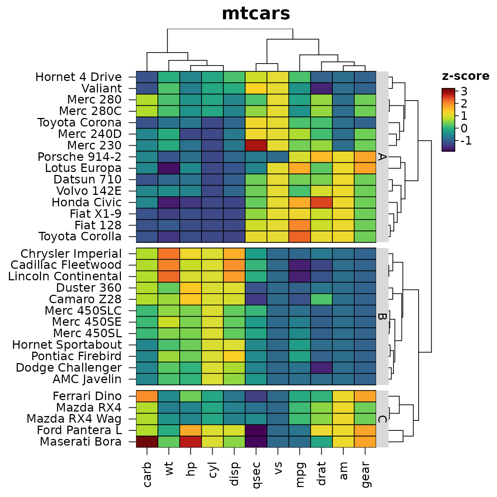
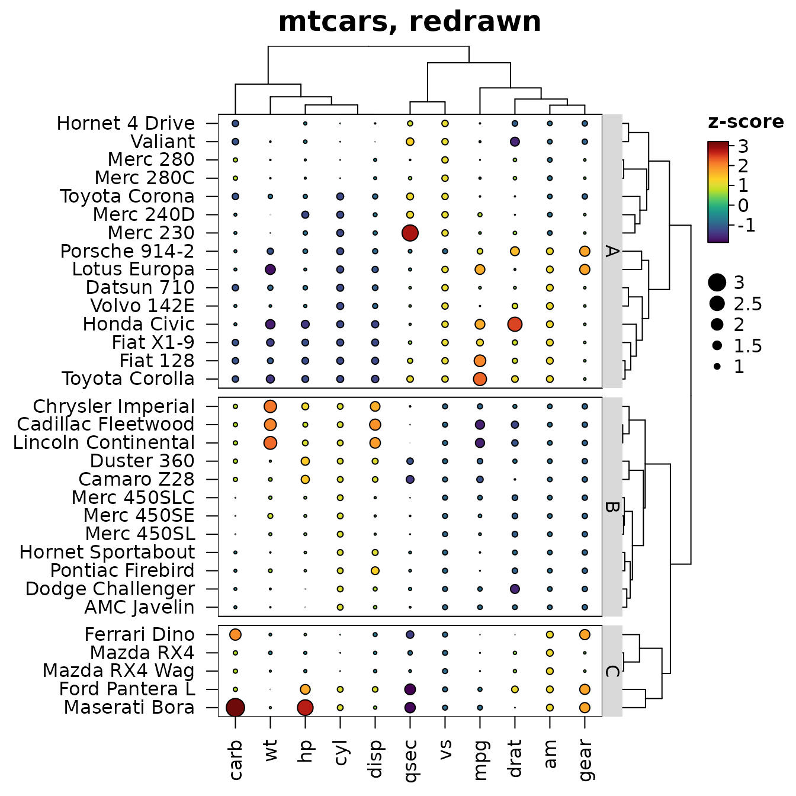
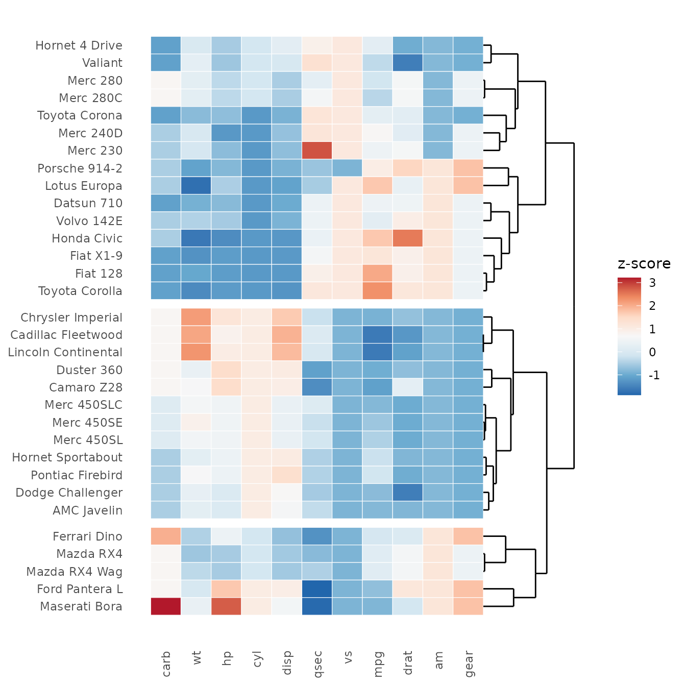
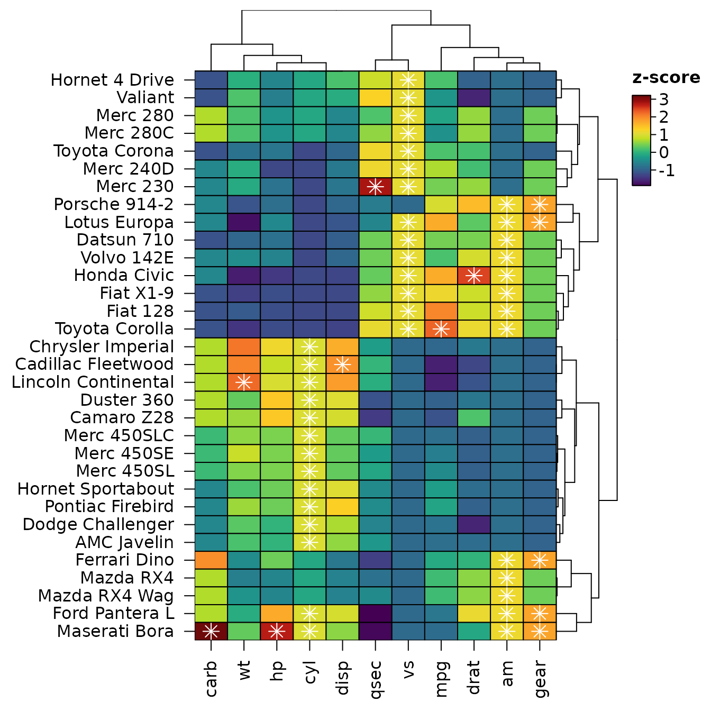
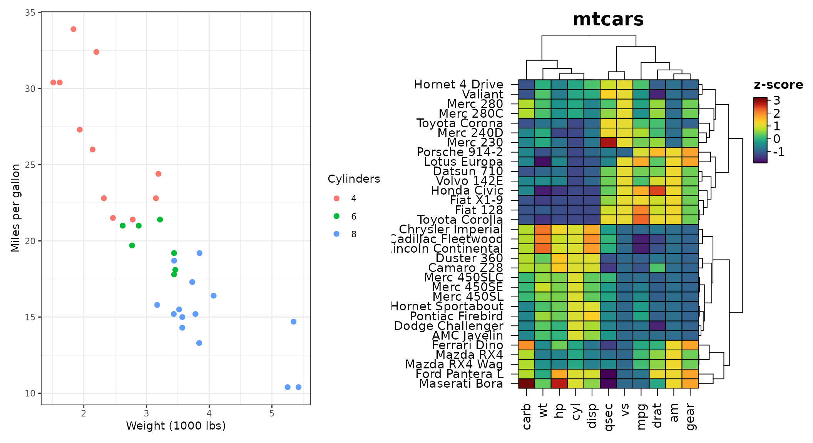
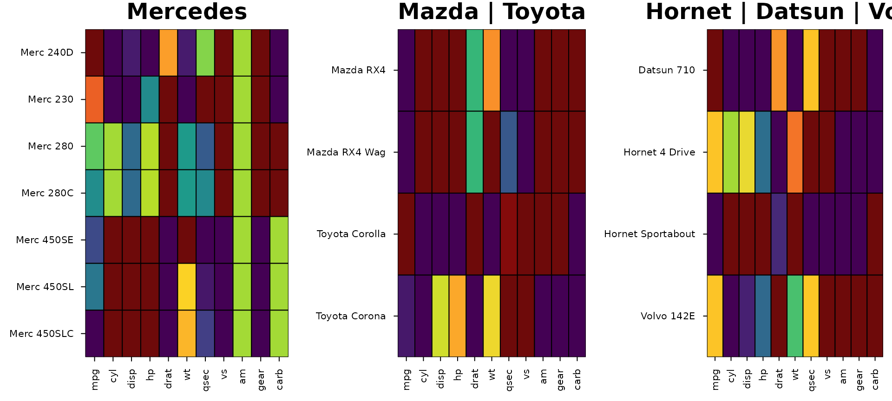

heat_map() draws a heatmap and returns it as an object.
This article shows what you can do with that object: redraw it with
changes, save it, take its orders and clusters for further analysis,
rebuild it in ggplot2, place it beside ggplot2
plots, and describe it in words for readers who can’t see it.
library(HeatmapR)
hm <- heat_map(
mtcars,
scale = "zscore",
tree = "both",
tree_cut_y = 3,
tree_label_y = TRUE,
tree_label_text_y = c("A", "B", "C"),
legend_title = "z-score",
title = "mtcars"
)
#> Applying zscore scaling to each column...
Redrawing and saving
A heat_map object is the recordedplot of
the heatmap together with the arguments that made it.
print() and plot() draw it again, with any
argument replaced, and data draws other data with the same
settings. The slow steps (dendrograms, k-means clusters, branch support)
are reused when nothing they depend on has changed, so a redraw only
draws.

heat_map_save() writes a heatmap to a file (PNG, JPEG,
TIFF, PDF, SVG or EPS, from the extension), at the size and resolution
you choose: either the object itself (x = hm) or every
heatmap drawn after the call until heat_map_complete().
file <- tempfile(fileext = ".pdf")
heat_map_save(file, x = hm, width = 6, height = 7)
file.exists(file)
#> [1] TRUEOrders, clusters and colours
heat_map_info() returns what the heatmap is made of: the
data as displayed (after scaling), the order of the rows and columns,
the cluster of each row and column, the dendrograms, the colour, size
and shape of every cell, and the bounding box of every component in
inches.
info <- heat_map_info(hm)
names(info)
#> [1] "data" "row_order" "col_order" "row_clusters"
#> [5] "col_clusters" "tree_x" "tree_y" "support_x"
#> [9] "support_y" "zoom_x" "zoom_y" "axis_text_x"
#> [13] "axis_text_y" "colours" "split_colours" "split_data"
#> [17] "sizes" "shapes" "centers" "annotations"
#> [21] "layout" "raster" "col_limits" "size_limits"
# THE ROWS IN THE ORDER THEY ARE SHOWN, FROM THE TOP
head(rownames(mtcars)[info$row_order])
#> [1] "Hornet 4 Drive" "Valiant" "Merc 280" "Merc 280C"
#> [5] "Toyota Corona" "Merc 240D"
# THE CLUSTER OF EACH CAR
split(rownames(mtcars), info$row_clusters)
#> $`1`
#> [1] "Datsun 710" "Hornet 4 Drive" "Valiant" "Merc 240D"
#> [5] "Merc 230" "Merc 280" "Merc 280C" "Fiat 128"
#> [9] "Honda Civic" "Toyota Corolla" "Toyota Corona" "Fiat X1-9"
#> [13] "Porsche 914-2" "Lotus Europa" "Volvo 142E"
#>
#> $`2`
#> [1] "Hornet Sportabout" "Duster 360" "Merc 450SE"
#> [4] "Merc 450SL" "Merc 450SLC" "Cadillac Fleetwood"
#> [7] "Lincoln Continental" "Chrysler Imperial" "Dodge Challenger"
#> [10] "AMC Javelin" "Camaro Z28" "Pontiac Firebird"
#>
#> $`3`
#> [1] "Mazda RX4" "Mazda RX4 Wag" "Ford Pantera L" "Ferrari Dino"
#> [5] "Maserati Bora"
info$layout[1:4, ]
#> component xmin xmax ymin ymax
#> 1 heatmap 1.916527 5.296403 0.6968001 5.995
#> 2 tree_x 1.916527 5.296403 5.9950000 6.595
#> 3 labels_y 5.296403 5.476090 0.6968001 5.995
#> 4 tree_y 5.476090 6.076090 0.6968001 5.995The clusters are numbered from the top of the heatmap, as they are labelled, so they can be used straight away, e.g. to compare the cars of each cluster:
Tidy data for ggplot2
heat_map_data() returns what the heatmap shows as tidy
tables: one row per cell, row, column or dendrogram segment.
x and y are the centres of the cells in the
heatmap’s own co-ordinates, including the gaps between clusters, so a
heatmap can be rebuilt or restyled with ggplot2, exported,
or drawn on with base graphics.
cells <- heat_map_data(hm)
head(cells)
#> row column row_index col_index display_row display_col x
#> 1 Hornet 4 Drive carb 4 11 1 1 0.5
#> 2 Hornet 4 Drive wt 4 6 1 2 1.5
#> 3 Hornet 4 Drive hp 4 4 1 3 2.5
#> 4 Hornet 4 Drive cyl 4 2 1 4 3.5
#> 5 Hornet 4 Drive disp 4 3 1 5 4.5
#> 6 Hornet 4 Drive qsec 4 7 1 6 5.5
#> y value colour size shape row_cluster
#> 1 32.49656 -1.122152071 #3A538AFF 1 rect 1
#> 2 32.49656 -0.002299538 #2AAF7FFF 1 rect 1
#> 3 32.49656 -0.535092840 #24858DFF 1 rect 1
#> 4 32.49656 -0.104987809 #25A783FF 1 rect 1
#> 5 32.49656 0.220093694 #4AC16DFF 1 rect 1
#> 6 32.49656 0.890487156 #CCDE29FF 1 rect 1
library(ggplot2)
rows <- heat_map_data(hm, "rows")
cols <- heat_map_data(hm, "columns")
tree <- heat_map_data(hm, "tree_y")
edge <- max(cells$x) + 0.5
grow <- function(h) edge + 3 * h / max(tree$x)
ggplot(cells) +
geom_tile(aes(x, y, fill = value), colour = "white") +
geom_segment(data = tree, aes(x = grow(x), y = y, xend = grow(xend), yend = yend)) +
scale_fill_distiller(palette = "RdBu", name = "z-score") +
scale_x_continuous(breaks = cols$x, labels = cols$column) +
scale_y_continuous(breaks = rows$y, labels = rows$row) +
labs(x = NULL, y = NULL) +
theme_minimal() +
theme(panel.grid = element_blank(),
axis.text.x = element_text(angle = 90, hjust = 1, vjust = 0.5))
Drawn straight after heat_map(), base graphics land on
the cells. Below, the largest value in each column is marked with a
star:
hm <- heat_map(mtcars, scale = "zscore", tree = "both", legend_title = "z-score")
#> Applying zscore scaling to each column...
cells <- heat_map_data(hm)
top <- cells[ave(cells$value, cells$column, FUN = max) == cells$value, ]
points(top$x, top$y, pch = 8, col = "white", cex = 1.5)
Beside ggplot2 plots
heat_map_grob() turns a heatmap into a grid
graphical object, so it can sit beside ggplot2 plots in
patchwork, cowplot or gridExtra
layouts. The grob draws the heatmap again whenever its space changes, so
dendrograms, legends and text are sized for the space it is given. It
needs the gridGraphics package.
library(patchwork)
p <- ggplot(mtcars, aes(wt, mpg, colour = factor(cyl))) +
geom_point(size = 2) +
labs(x = "Weight (1000 lbs)", y = "Miles per gallon", colour = "Cylinders") +
theme_bw()
p + heat_map_grob(hm, title = "mtcars") + plot_layout(widths = c(1, 1.5))
Several heatmaps can also share one figure with
heat_map_custom(), which takes a layout (a number of rows
and columns, or a matrix as in graphics::layout()), and
heat_map_complete() to finish it.
heat_map_custom(popup = FALSE, layout = c(1, 3))
heat_map(mtcars[grepl("Merc", rownames(mtcars)), ], scale = "column",
legend = FALSE, title = "Mercedes")
#> Applying range scaling to each column...
heat_map(mtcars[grepl("Mazda|Toyota", rownames(mtcars)), ], scale = "column",
legend = FALSE, title = "Mazda | Toyota")
#> Applying range scaling to each column...
heat_map(mtcars[grepl("Hornet|Datsun|Volvo", rownames(mtcars)), ],
scale = "column", legend = FALSE, title = "Hornet | Datsun | Volvo")
#> Applying range scaling to each column...
Alternative text
Figures in reports and on the web need alternative text for readers
using screen readers, and a heatmap is hard to describe by hand.
heat_map_describe() writes the description from the heatmap
itself: its size and scaling, what the colours show (naming the colours
of the scale), the most extreme values, how the rows and columns are
ordered, and where each cluster is highest and lowest, plus branch
support, uncertainty, annotations, bars and zoom panels when the heatmap
has them.
hm <- heat_map(mtcars, scale = "zscore", tree = "both", tree_cut_y = 3,
legend_title = "z-score", title = "mtcars")
#> Applying zscore scaling to each column...
heat_map_describe(hm)
#> Heatmap titled "mtcars" of 32 rows by 11 columns, converted to z-scores within
#> each column. Colours show z-score, from dark purple (-1.87) through yellow
#> green to dark red (3.21). The highest value is 3.21 (Maserati Bora, carb) and
#> the lowest is -1.87 (Ford Pantera L, qsec). Rows are ordered by hierarchical
#> clustering (euclidean distance, complete linkage). Rows are split into 3
#> groups, numbered from the top: group 1 (15 rows, e.g. Hornet 4 Drive and
#> Valiant) is highest in vs and mpg and lowest in cyl and hp; group 2 (12 rows,
#> e.g. Chrysler Imperial and Cadillac Fleetwood) is highest in disp and cyl and
#> lowest in gear and drat; group 3 (5 rows, e.g. Ferrari Dino and Mazda RX4) is
#> highest in carb and gear and lowest in qsec and vs. Columns are ordered by
#> hierarchical clustering (euclidean distance, complete linkage).In R Markdown and Quarto the description can be the figure’s
alternative text: draw the heatmap in one chunk and pass the description
to the fig.alt option of the chunk that shows it.
```{r, include = FALSE}
hm <- heat_map(mtcars, scale = "zscore", tree = "both", tree_cut_y = 3)
```
```{r, fig.alt = heat_map_describe(hm)}
hm
```
hm![Heatmap titled "Described by heat_map_describe()" of 32 rows by 11 columns, converted to z-scores within each column. Colours show z-score, from dark purple (-1.87) through yellow green to dark red (3.21). The highest value is 3.21 (Maserati Bora, carb) and the lowest is -1.87 (Ford Pantera L, qsec). Rows are ordered by hierarchical clustering (euclidean distance, complete linkage). Rows are split into 3 groups, numbered from the top: group 1 (15 rows, e.g. Hornet 4 Drive and Valiant) is highest in vs and mpg and lowest in cyl and hp; group 2 (12 rows, e.g. Chrysler Imperial and Cadillac Fleetwood) is highest in disp and cyl and lowest in gear and drat; group 3 (5 rows, e.g. Ferrari Dino and Mazda RX4) is highest in carb and gear and lowest in qsec and vs. Columns are ordered by hierarchical clustering (euclidean distance, complete linkage).](integration_files/figure-html/alt-show-1.png)